ScalarLens：把数值坐标与上下文响应分开的 CTR 数值嵌入
论文：ScalarLens: Numerical Embeddings with Stable Coordinates and Contextual Responses for CTR Prediction。作者 Heng Yao、Tianying Liu、Yulou Shu、Yong He、Chuan Yuan、Kaibin Qiu、Guowei Chen、Jiayu Zhao、Siyun Hou；机构包括蚂蚁集团、独立研究者、阿里巴巴及河南理工大学。公开版本为 2026-09-24 的 arXiv v1，本文记录日期为 2026-09-28。论文原文。以下根据完整十二页正文和附录核验；本轮未核验到独立可访问的代码或项目页，论文所述 artifact 内容不等于已验证公开仓库。
1. 背景和问题
核心问题：同一个数值究竟应当只有一个表示，还是应当保留由数值自身决定的位置，同时允许它对点击预测的含义随样本上下文改变？来源为原文第 1 节 Introduction、第 3.1 节及 Figure 1；这里是对原文研究问题的中文概括。
CTR 模型里常见的数值字段并非只有一种物理意义：次数、时间间隔、金额和统计率都要进入同一个排序系统。通常先把一个标量映射为向量，再交给交叉网络、因子分解或注意力模型学习交互。局部插值、周期基、分桶和分布锚点虽有不同几何假设，却共享一个接口：对固定模型而言，某字段取同一个值，编码器总是返回同一个向量。这样做容易维护单变量语义，也方便缓存；但它同时把“数值位于哪里”和“此数值在当前样本里意味着什么”合成了一个对象。论文认为后者并不应天然具有前者的不变性，因此应当在数值编码阶段明确保留两条路径。
这个问题并不意味着现有交叉网络无法表示条件关系。足够强的下游模型可以重新组合数值与类别信息，恢复固定数值 token 没有显式携带的条件结构。真正的问题是这种职责分配是否合算：每一种消费者都必须在自己的交互层重新发现同一类关系，较弱的消费者可能更难恢复，较强的消费者又可能承担额外优化负担。ScalarLens 试图在不替换消费者的前提下提供一种更适合交互的数值接口。其可验证主张因此应是“在相同消费者下替换数值表示是否有效”，不能扩写成“传统 CTR 骨干无法建模上下文”。这也是作者测试九种骨干而不只选一种的原因。
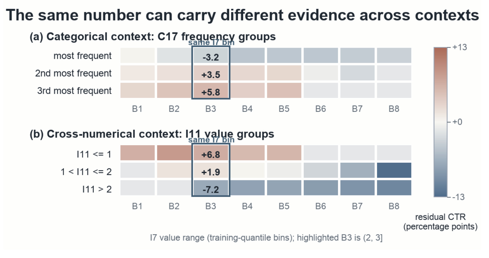
Figure 1 展示的是数据诊断而非训练模型的预测。两个面板都来自 Criteo 验证集，横轴是目标数值字段 I7 的训练分位数分箱，颜色代表观察点击率减去经验贝叶斯加性估计后的残差，单位是百分点。上面按类别字段 C17 的频率组分行，下面按数值字段 I11 的区间分行；框出的第三个箱对应 I7 处于 (2,3]。这个同一目标区间，在类别组里的残差分别为负 3.2、正 3.5、正 5.8 个百分点，在数值上下文组里则为正 6.8、正 1.9、负 7.2 个百分点。符号翻转表明，仅有目标箱和上下文组各自的加性主效应，不能完全解释这些观察关联。它所提示的是条件化表达的价值，而不是某个数值的绝对点击贡献为正或为负。
图中的统计控制十分重要。作者先用训练数据选择字段配对及分组边界，不把验证标签用于挑选最显眼的格子；验证样本少于五百的格子被省略，以免极小组的噪声成为动机。整个诊断没有使用 ScalarLens 输出，没有 CTR 骨干参与，也没有看测试标签。因此图可以支持“数据中存在剩余条件结构”，不能直接支持“ScalarLens 已经学会这种结构”，更不能证明改变类别会因果性地改变点击率。两种上下文面板都出现翻转，也不代表两种信息源对神经模型具有相同增量价值；后文消融实际上表明类别上下文更稳定，其他数值字段只是辅助。这种动机与效果的区分保留了实验链条的完整性：先看数据是否有结构，再看结构能否被模型利用，最后看代价是否可接受。图里的分箱还把区间内多个原始值合在一起，因此它是区间级关联证据，不能据此宣称每个精确实数在所有样本里都发生相同幅度的翻转。
另一条动机来自特征生产。作者把直接接收原始业务尺度视为部署需求，因为各个特征的生产任务、刷新频率和版本可能彼此独立。若额外维护标准化列，离线要回填衍生数据并支付存储与读写成本；若线上临时做变换，则训练与服务必须同步变换算子和拟合统计量。这里的论点是生命周期管理，而不是计算一次减均值除标准差有多昂贵。ScalarLens 仍然保存训练范围、实施端点裁剪、维护 schema 并监控漂移，只是把尺度处理更多收拢到模型检查点。把这一动机写成“完全不需要任何统计或预处理”会误读原文：训练上下界本身就是从训练数据获得的状态。
原文 Table 1 对相关工作的定位也围绕上下文作用的位置。AutoDis 使用软分桶，PLE 保留箱内位置，周期编码暴露频率成分，B-spline 使用局部平滑基，DEER 学习网格并在相邻节点间插值，NaryDis 引入多进制尺度，DAE 使用分布锚点距离。这些方法在单变量几何上各有侧重。DAES 已经让所选类别字段调节分位数坐标上的插值权重，因此本文不应被称作首个上下文数值编码器。ContextNet、FRNet 等则可以在通用表示层同时重整类别和数值字段。ScalarLens 的差别是先把焦点标量坐标确定下来，禁止上下文进入区间选择与插值，再让上下文驱动独立状态，并只输出数值 token。
“稳定”在这里还需要一个时间尺度限定：它指同一组模型参数下，改变同一样本里的其他字段不会改变焦点坐标；它不指训练期间网格永远不动，也不指模型更新后坐标必然保持相同，更不指最终输出数值 token 对上下文保持不变。后一种不变反而会抵消论文希望获得的响应性。为避免偷换概念，本文把局部坐标、迭代状态和最后的数值嵌入分开命名。只有第一项具有本文定义的上下文不变性，第二项具有有限幅值约束，第三项承担具体预测任务，其尺度与变化还受读出网络控制。
对推荐工程读者而言，值得关注的是这样一个模块化取舍：既有类别查表和排序骨干能够保留，数值表示内部则多出了一次样本级条件化。它减少了接口迁移的范围，但也意味着原本可单字段独立计算的数值 token 现在需要等待上下文到齐。是否值得采用，必须同时看数据源质量、数值字段的真实增量以及服务批量，不能仅凭一个平均排名决定。论文给出的原始尺度强结果、标准化下的退让以及简单条件化的局部反例，恰好构成了判断这个取舍所需的三个方向。
2. 方法
2.1 稳定数值坐标：正宽度网格与局部插值
原文第 3.1 节用如下接口表达坐标和响应的职责分工（原式 3）：
符号解释：$x_i$ 是第 $i$ 个焦点数值字段，$e_i^{\mathrm{loc}}$ 是只由该标量及该字段参数决定的局部坐标表示，$\mathcal C$ 表示从数值输入与类别嵌入提取的样本上下文，$\Psi_i$ 是包含响应和回读的组合映射，$e_i^{\mathrm{num}}$ 是送入 CTR 骨干的最终数值向量。这里不把 $\mathcal C$ 误认为一个独立外部服务，它是后续字段头及跨字段通信所实现的条件信息路径。 坐标先于条件化建立是整个结构最强的约束。对每个数值字段，作者保存训练范围，并用可学习的区间宽度确定局部网格。原式 5 为：
符号解释：$\mathbf w_i$ 为字段 $i$ 的宽度 logits，$\tau$ 为温度，$K$ 为区间数，$p_{ik}$ 为 softmax 概率，$\epsilon$ 是最小宽度的正值底座，$q_{ik}$ 是加底座后重新归一化的宽度，$l_i,u_i$ 是训练上下界，$b_{ik}$ 为第 $k$ 个边界。正宽度保证非退化范围内边界严格递增，累计宽度仍覆盖原训练范围。上下文没有出现在这些变量的计算式里，因此无法把同一焦点值偷偷移到另一段区间。 对于落在相邻边界之间的焦点值，原式 6 用两个节点向量做线性插值：
符号解释：$k$ 是焦点值所处区间的索引，$a_i$ 是该值在区间内的相对位置，$E_{ik}$ 和 $E_{i,k+1}$ 是两个相邻节点的可学习向量；超出训练范围的输入先裁剪到端点。相邻区间共用节点，所以跨边界的表示连续。边界的顺序是标量坐标的顺序，不应据此推导任意一个嵌入维度或最后的 CTR 概率也必然单调。
这一步借鉴了 DEER 的局部网格，论文并不把插值本身当作全新发明。其作用是给后续上下文响应提供一个可独立检查的起点：固定检查点、固定焦点值，交换其他字段后，区间索引、插值系数与局部向量均应不变。网格与节点仍参与任务训练，可以根据损失调整分辨率，故“稳定坐标”与“可学习网格”没有冲突。端点裁剪给出了范围外的确定行为，却也使超界值共享端点表示；极端值仍携带多少有用强度信息，需要在真实数据中检查，原文没有由这条构造证明外推能力。训练范围随检查点一起发布解决的是同步边界，不是对新分布自动适应的完整方案。
2.2 上下文响应动力学：字段身份、低秩通信与有界更新
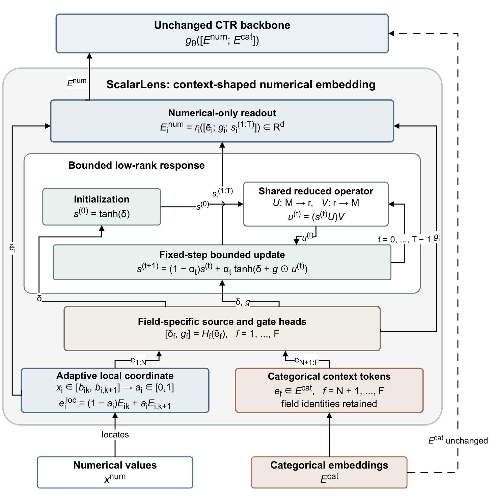
Figure 2 应从底部向上读。左侧原始数值先通过局部坐标模块，右侧类别嵌入一方面进入上下文分支，另一方面沿外侧虚线直接送往原有骨干。这个旁路说明“类别嵌入保持不变”是模块输出接口的含义：ScalarLens 不返回一组替代类别 token，而不是说训练时类别查表参数被冻结。中间的字段专用头接受归一化 token，输出每个字段自己的源项与门。再上方的共享低秩算子把所有字段的紧凑状态进行通信，固定步数更新框将消息和原始源项重新结合。最顶端回读只产生数值输出，与未替换的类别路径重新拼接。这些连线限定了论文能归因的范围：收益来自数值接口里的条件化，而不是把所有字段换成另一个强交互骨干。
图中左侧从局部坐标直达回读的长箭头尤其重要，它保证任务头能够直接看到焦点位置，不必从上下文混合后的状态中重新推断原值。回读还接收门以及每一次更新后的数值状态，所以后续任务可以利用响应轨迹而非仅取最后一层。动力学框内部反复注入源项，避免迭代只剩下对周围字段的汇总而忘记本地证据。低秩算子在不同更新步之间共享参数，同时字段头保持独立，形成“通信参数共享、字段身份不混淆”的组合。图中出现的物理学式源项和响应术语是模型降阶的类比，原文并没有假设广告点击遵守某个物理守恒定律，也没有以物理方程替代监督学习。
从执行次序看，训练和推理都必须先构造当前样本的全部输入 token，再执行规定次数的通信和更新，最后只读出数值字段。没有等待迭代收敛的停止条件，也没有逐样本求逆。图里固定深度使执行图较稳定，适合批量矩阵运算；但不同样本的上下文不同，最终数值 token 无法简单按焦点数值缓存复用。这一点与最初的稳定坐标不矛盾：可复用的是单变量几何部分，不是包含上下文的最终响应。图所支持的工程结论是可以局部替换数值编码模块，并清晰记录内部不变量；图本身并不证明在线时延一定下降，成本要由后文效率测量决定。 将数值局部 token 与类别 token 合在一起之后，每个字段先做不带仿射参数的 RMS 归一化（原式 7）：
符号解释：$f$ 遍历全部 $F=N+C$ 个字段，$N,C$ 分别是数值与类别字段数，$d$ 为 token 维度，$e_f$ 为当前字段输入，$\epsilon_n$ 是数值稳定项，$\bar e_f$ 是归一化结果。这个归一化作用在已构造的嵌入向量上，不是外部输入列的 z-score；它不改变焦点值选中的区间。每个字段独立的头把该向量映射为 $m$ 维源项 $\delta_f$ 与门 $g_f$，保留字段身份。将全部字段展平得到长度 $M=Fm$ 的源项与门，并以 $\tanh(\delta)$ 初始化状态。 跨字段通信采用原式 8，而不是显式维护一个平方规模的全连接算子：
符号解释：$s^{(t)}$ 为第 $t$ 步全部字段的展平状态，$U,V$ 是两次投影矩阵，$r$ 为共享子空间的秩，$u^{(t)}$ 为返回各字段的消息。先压缩再展开将通信计算从平方规模压到随 $Mr$ 增长；它仍然允许消息跨字段传播，只是把交互限制在较小共享子空间内。低秩不是“没有交互”，也不是对真实条件函数低秩性的统计证明，而是容量和代价的结构取舍。 原式 9 把消息转为有界候选，再进行带学习步长的混合：
符号解释：$\delta$ 是每步重复注入的源项，$g$ 控制接收消息的强度，$\odot$ 是逐元素乘法，$\tilde s$ 为候选状态，$a_t$ 是可学习步长参数，$\sigma$ 为 sigmoid，使 $\alpha_t$ 处于零到一之间。初态和每个候选都处于逐维的负一到正一区间，凸组合继续留在该区间。因此原文给出的是状态幅值有界，无需等到无穷步也成立。它没有约束 $UV$ 的谱范数到收缩范围，也没有由此证明唯一固定点、任意步数收敛或梯度永不消失；门、读出以及最终概率还需要分别分析。有限深度与有界性帮助控制执行与数值幅度，却不能替代完整稳定性理论。
2.3 保留坐标的数值回读与复杂度边界
原式 10 明确把本地位置、门和全部瞬态拼接后再读出：
符号解释：$z_i$ 为第 $i$ 个数值字段的回读输入，方括号内分号表示向量拼接，$\bar e_i$ 是归一化后的局部坐标，$g_i$ 为本字段门，$s_i^{(1)},\ldots,s_i^{(T)}$ 为有限步更新的数值状态，$\operatorname{Readout}_i$ 是两层 SiLU 头并接正的可学习增益。原文默认嵌入维度十六、区间数十六、状态维度八、秩十六、更新三步、头宽三十二。输出维度仍为十六，因此下游消费者的输入形状保持一致。
这个设计把“坐标保留”落到了可检查的计算路径上，而非仅通过一个正则项希望模型记住原值。读取全部瞬态使模型可以同时利用较浅与较深响应，源项和门提供本字段控制信息，最终监督信号经骨干反向传到这些分支。论文没有额外提出一个物理约束损失或新的对比学习目标，不能为了把它包装成完整框架而自行添加正则公式。训练使用统一 CTR 任务协议，验证 AUC 用于早停与检查点选择，最终测试只在选定模型上评估；端到端梯度是否重要由 StopGrad 消融验证，而不是由模块命名推断。
复杂度也应按照实际模块区分。原文第 3.5 节给出的插值代价随批量、数值字段数与网格区间数相乘，响应部分随批量、步数、展平状态长度及秩相乘；字段头则随字段数线性增长。其实现由批量投影、每步两次矩阵乘法和逐点非线性组成，不需要逐样本循环、矩阵逆或收敛检测，也不新增随类别词表增长的响应表。不过原有类别查表当然仍然存在，不能将“响应模块不新增词表表格”读成整个 CTR 系统内存与词表无关。正文使用固定深度既有算法意义，也为整步编译和融合优化提供条件。
这种回读还留下一个重要边界：有界的是动力学状态，最终输出经过两层非线性头与可学习增益后不必逐维落在负一到正一。若做故障监控，应分别检查坐标不变量、内部状态范围、最终嵌入分布与预测质量，不能只检查最后一项是否改变。相反，在固定焦点值而改变上下文的实验中，最终嵌入发生变化恰是设计目的。一个满足坐标不变性却输出完全不响应的实现可能没有用上上下文；一个反应强烈却 AUC 不增的实现也可能只是引入噪声。附录的固定检查点干预将这两个层面分开检验，是方法结构自然引出的验收方式。
3. 实验结果
3.1 统一接口下的原始尺度主矩阵
实验包括 AutoML-A、AutoML-E 与 Criteo。Table 2 给出的数值字段数分别是二十三、六、十三，类别字段数分别是五十一、二十五、二十六；训练、验证、测试规模依次为 2.80M/1.01M/0.88M、5.14M/1.82M/1.78M 和 36.67M/4.58M/4.58M。前两个数据集来自同一 AutoML3 家族，因此三个名字不等于三个完全独立的数据来源。九种消费者涵盖 DNN、DeepFM、WideDeep、NFM、PNN、DCN、DCNv2、AutoInt、FiBiNET。共同设置为批量 4096、嵌入维度十六、Adam 学习率千分之一、隐藏层宽度 256/128/64，不用批归一化、dropout 或正则化，全局打乱，用验证 AUC 早停且 patience 为二，种子为 2026 至 2028。
主协议直接使用原始数值范围，Criteo 十三个数值字段没有共享对数变换。每个方法返回相同形状的数值 token，类别路径与消费者固定。对 DeepFM、WideDeep、NFM，线性分支也读相同的十六维数值向量，防止原始标量绕过编码器。矩阵为十九种表示、三个数据集、九种骨干、三个种子，共一千五百三十九次运行；下表是验证选定检查点后的测试结果，并非验证性能。部分基线采用官方实现，而 DAE、DEER、NaryDis 与 DAES 的当前兼容模块是根据论文描述重实现；DAES 行不包含其流式估计器。因而这里比较的是统一代码和输入协议中的机制，不等于复现每篇原论文最强的完整生产系统。
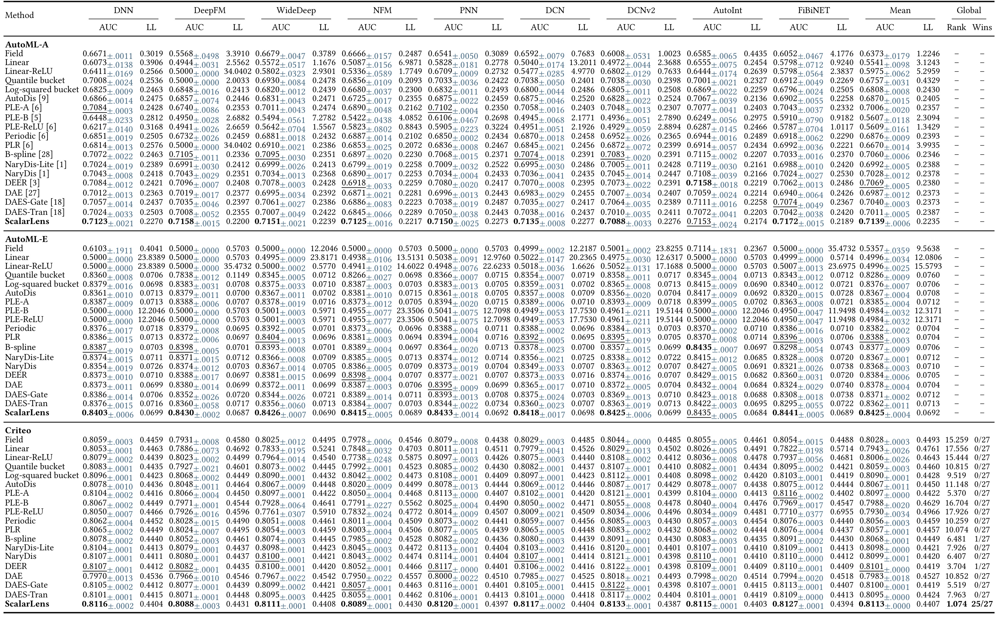
Table 3 的行是表示方法，三个大块是数据集，列按九种骨干分成 AUC 与 Logloss 两项。AUC 越高越好，Logloss 越低越好；小号下标是三种子的标准差。右侧 Mean 在当前数据集内跨骨干汇总，最后一块的 Global Rank 和 Wins 才跨全部二十七个组合。粗体与下划线按照未截断均值排名，印刷表只截断到四位小数，因此显示相同不能当作统计平局。ScalarLens 的总体平均排名为 1.074，二十七个组合中二十五个第一、剩余两个第二。在 AutoML-A 与 AutoML-E 各赢八种骨干，在 Criteo 赢全部九种。这个计数是“同一数据集乘消费者配置”的胜场，不是三种子一共八十一场里的胜场，也不是十九种方法两两比较的总胜率。
按数据集跨骨干平均，ScalarLens 的 AUC 分别为 0.7139、0.8425、0.8113；相对各数据集平均最强竞争者的差值为 0.0070、0.0037、0.0012。三个数据集的平均 Logloss 分别为 0.2235、0.0692、0.4407，也均为表内最低，说明平均排序提升没有系统性地通过牺牲概率质量换取。但这不是每一个单元格的 Logloss 都最佳，更不是对概率校准误差作了全方位评估。两个未赢的设置都涉及 AutoInt：AutoML-A 上 DEER 约高 0.0005，AutoML-E 上 B-spline 与 ScalarLens 印刷为同样的 0.8435，但未截断排名仍使后者居第二。保留这两处例外，是避免把跨消费者可迁移夸大成普适优势的必要条件。
表中某些原始尺度基线在 AutoML 数据上接近随机排序，甚至出现很大的 Logloss。作者把它们解释为与原始数值范围不兼容，AutoML-E 中高达约一千四百六十万的值会使部分分支饱和。这在“接收原始服务单位”的约束下是合法失败，但不能代表基线经过常规标准化和针对性调参之后仍然如此。故主矩阵回答的是固定原始尺度协议中的表现；如果业务本来就有可靠的数值标准化，必须继续读共享 z-score 审计。将这些失败单元格拿来宣传巨幅算法领先，会把输入兼容性、优化困难和条件表达能力混为一谈。
3.2 标准化审计怎样收窄结论
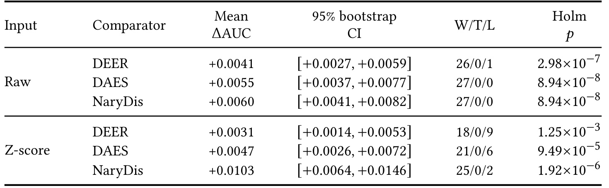
Table 4 把 ScalarLens 与 DEER、DAES、NaryDis 在同一数据集和骨干上的均值作差，每个协议都有二十七个配对设置。正差值有利于 ScalarLens，置信区间通过对配对设置做 bootstrap 得到，显著性使用 Wilcoxon 符号秩检验，并在六次比较上做 Holm 校正。原始尺度下相对三者的平均绝对 AUC 增量为 0.0041、0.0055、0.0060，对 DEER 是二十六胜一负，对另外两者都是二十七胜。这里的二十六胜与上一表的二十五个第一并不冲突：某个配置可以赢 DEER，却输给第三种方法，所以两种统计的分母含义和比较对象必须明确。
标准化审计对所有方法共享一套仅在训练集拟合的 z-score，重新运行完整矩阵，没有为 ScalarLens 单独挑选变换。此时对 DEER、DAES、NaryDis 的均值增量分别为 0.0031、0.0047、0.0103，胜负分别为十八胜九负、二十一胜六负、二十五胜两负。三组校正后的显著性仍满足表中所列阈值，但 DEER 已经在九个设置里反超。对 DEER 的置信区间为正 0.0014 到正 0.0053，表明配对均值仍为正；它没有消除单个业务设置中退化的可能。尤其不能把显著的跨设置平均效果译成“每个数据集上的每次训练都显著提升”。
标准化消除了原始尺度协议里所有六十个低于 0.55 AUC 的单元格，说明尺度确实解释了部分差距；与此同时，平均优势尚未消失，又说明它不是唯一解释。表的价值在于把两个解释同时保留，而不是用其中一个覆盖另一个。原始尺度是作者的主部署协议，共享标准化是用来检验替代解释的控制实验，两者不能混算胜场或挑选各自最好数字。统计上还要看到二十七个设置存在相关性：同一数据集共享样本，不同骨干共享输入，AutoML 两个子集又属于同一家族。bootstrap 与校正检验提供了当前矩阵内部的支持，却不会自动把这些设置变成二十七个独立新域。
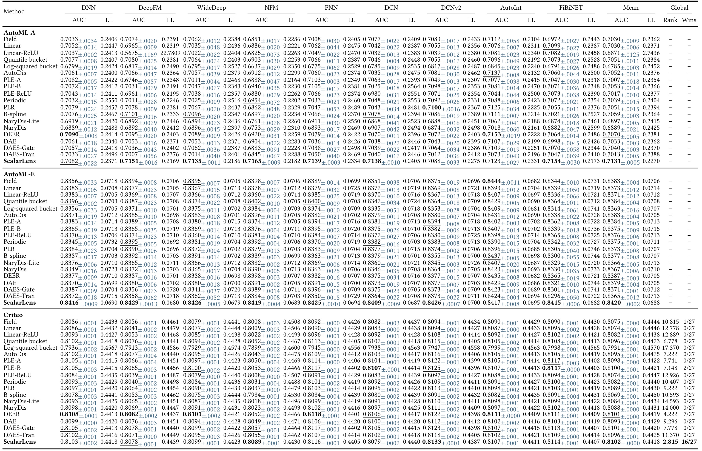
Table 11 延续主结果的布局，提供标准化后的全部十九种表示，避免只拿三名指定对手来描述整体排名。最右侧可以读到 ScalarLens 的平均排名变为 2.815，第一名次数为 16/27；附录说明其在十九个配置中进入前三。这明显弱于原始尺度的二十五个第一，因此本文最准确的结论是“原始尺度下广泛领先，标准化后仍有平均优势但领先面收缩”，绝不是“任意预处理下全面领先”。Criteo 的平均 AUC 从原始尺度约 0.8113 变为标准化约 0.8102，DEER 在标准化 Criteo 的平均值约 0.8108。这个变化提醒读者，方法之间的排序不只取决于是否使用上下文，还会受变换后的优化与特征几何影响。
具体到 Criteo/DCNv2，ScalarLens 标准化后仍显示 0.8133，但 Criteo/DNN 上为 0.8103，而 DEER 约为 0.8108；Criteo/DCN 上 ScalarLens 为 0.8079，DEER 约为 0.8106。这样的单元格比总胜场更接近选型时的问题：当前消费者和数据在何处，哪些字段的原始尺度保留有意义，是否有可靠的标准化基线。不能从某一列获胜推导所有列都适合接入，也不能从个别失败否定它在其他配置中稳定的正增量。表里同一方法在不同协议下有不同分布，比较时应固定协议、骨干、划分与种子，再看增量是否可复现。
共享标准化也暴露了生产论点的适用范围。如果已有平台把变换参数与特征版本管理得很好，省去外部变换的收益可能小于新增上下文响应的时延；如果上游字段来源混杂且维护衍生列成本很高，原始尺度接口的价值可能更大。论文没有直接测量这些组织层面的维护成本，所以不能把减少生命周期复杂度换算成未报告的服务收入或算力节省。完整标准化表提供的是模型精度证据，而非数据治理成本报告。审计后仍值得研究的核心，是在尺度得到控制后条件响应还能带来多少增量，以及哪些消费者已经通过自身交互覆盖了这部分能力。
3.3 消融将可靠来源与可简化部分分开
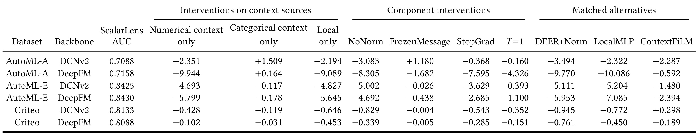
Table 5 覆盖三个数据集与 DCNv2、DeepFM 的六个组合，每个组合仍使用三个种子。ScalarLens 一列是完整模型的测试 AUC，其他列是“变体减完整模型”的 AUC 差值再乘一千，故负值意味着去掉或替换组件后下降。例如 Criteo/DCNv2 的 ContextFiLM 为正 0.298，正确还原为约正 0.000298 AUC，表示这个匹配仿射条件化对照在该格反超 ScalarLens，不能读成增加 0.298 AUC。AutoML-A/DeepFM 的 Local only 为负 9.089，对应约下降 0.009089；这展示了上下文响应在不同任务中的增量尺度相差很大。
信息源块说明类别上下文是较稳定的来源：在已有数值上下文的情况下加入类别信息，十八个配对种子都改善。其他数值字段的增量较弱，只在十八对中的十一对及六个均值中的四个改善；AutoML-A 上只保留类别上下文反而可比完整模型高出约 0.001509 或 0.000164。这不影响“允许数值上下文有时有益”的判断，却直接否定“两个上下文来源都普遍必要”。Local only 六格全负说明局部坐标单独使用不足以复现完整效果，而不是证明任何上下文实现都必须采用论文这套动力学。
组件块中去掉 RMS 归一化、切断相关梯度、只更新一步的平均下降分别约为 0.0037、0.0025、0.0011。归一化发生在坐标之后，所以它改善的是嵌入和动力学的数值条件，而非重新移动标量位置。FrozenMessage 的平均变化只有约负 0.0002，而且有正有负，意味着每一步重新计算消息更像可以评估的优化选择，不能包装成没有它就完全失效的核心定律。匹配替代中 DEER+Norm 与 LocalMLP 平均各损失约 0.0043，排除了“只加归一化”或“只加本地容量”足以复现效果的简单解释。ContextFiLM 平均损失约 0.0011，六格五负一正，说明完整设计更一致，却没有普遍压倒所有 conditioner。
消融的证据强度来自输入、消费者、输出形状和种子一致，而不是列数多。即便如此，它们只覆盖两个骨干，不是对全部九种消费者重复完整机制分析；冻结消息可简化、数值上下文有时冗余的现象也提醒我们，完整配置并非每个环境里的最小充分结构。对于工程迁移，合理的实验次序是先对照本地网格、类别条件化和完整响应，再判断是否值得保留数值来源与多步消息，不能把某个平均负值直接转化为强制组件清单。
3.4 受控恢复、真实稀有组与响应干预
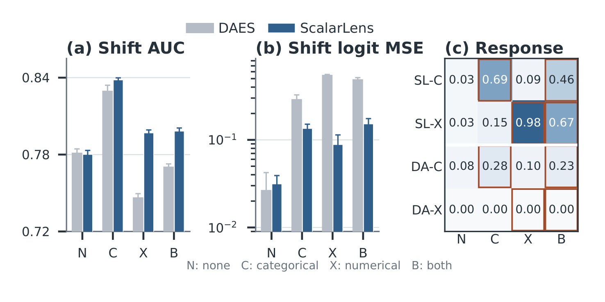
Figure 3 的横向四种生成条件依次为没有交互、只有类别交互、只有数值交互、两者同时存在。左面板是偏移测试集 AUC，中间是相对真实 logit 的均方误差，后者纵轴为对数尺度；误差棒表示五个种子的标准差。右侧热图记录类别或数值干预后 token 位移，橙色边框标出生成器实际启用的信息源。作者使用三个数值字段与两个类别字段，并让方法共用线性消费者，以减少强下游网络重新学习缺失交互的可能。类别 token 仍给线性消费者，所以基线可以利用类别主效应；受到限制的是数值与上下文的非加性交互，而非把类别信息完全藏起来制造优势。
偏移测试中，类别、数值、混合机制下 ScalarLens AUC 分别是 0.8383、0.7969、0.7983，DAES 分别是 0.8296、0.7463、0.7703。类别机制的真实 logit 均方误差从 0.2891 降到 0.1349。无交互条件下 ScalarLens 的同分布测试 AUC 为 0.7797，标准差 0.0035，与 DEER、DAES 接近，说明额外容量并非在所有生成条件中无条件获利。数值干预在数值机制与混合机制下使 ScalarLens 焦点最终 token 分别位移 0.9824 与 0.6703，DAES 因仅使用类别条件而对应位移为零。保留的焦点坐标变化恰为零，但最终上下文响应会变化，两项审计观察的是不同对象，不能把后者非零当作前者不稳定。
附录 A 明确训练、验证、同分布测试与偏移测试规模为两万、五千、一万、一万，每个种子各方法使用相同抽样。偏移将两个类别概率向量反转，并改变辅助数值与类别之间相关项的方向，但不改变标签生成公式，焦点标量支持集也保留。因此这是协变量分布改变，条件标签机制保持不变的 covariate shift，不能称为模型应对概念漂移、因果效应改变或线上策略反馈的证据。右侧热图所见的响应跟随激活来源，与更好的预测恢复相互支持；但生成器刻意包含正弦、平移和乘性交互，规模与现实复杂度都有限。它适合检验设计能否恢复已知机制，不适合替代跨时间业务验证。
附录 B 进一步说明动机图的估计过程，其核心是原式 13：
符号解释：$b$ 是目标数值箱，$c$ 是上下文组，$p_{\mathrm{add}}$ 为去除两个边际主效应后的加性参照，$y_{bc}$ 与 $n_{bc}$ 是该联合格的正例数和样本数，$p_{\mathrm{joint}}$ 为向加性估计收缩的联合估计，常数二百是原文平滑强度。它用于数据诊断而非 ScalarLens 的训练目标。训练分位数定义组别，确定性的六十万训练行用于候选拟合与选择，选完后才在验证集评估，测试集不参与这一过程。
该诊断在 AutoML-A/E/Criteo 的合格字段对里分别有 43.0%、73.3%、83.6% 获得验证 Logloss 改善。合格目标要求至少三个非空分箱，并有至少三个上下文组；这排除了部分常量或低基数字段，最终保留目标数十三、六、十一，不能把结论推广为每个原始数值字段都有同样交互。Table 7 中选中的类别与数值上下文分别在三十个目标中有二十七和二十九个正向结果，但 AutoML-A 类别目标的双侧符号检验值为 0.0923，不能抹去这项不显著情况。Table 8 的神经二乘二验证更直接：在没有或已经有数值信息时增加类别来源，乘一千后的平均增量为 5.779 和 5.865，十二对全正；增加数值来源对应仅 0.066 和 0.151，两个 bootstrap 区间都跨零。因此统计依赖和神经网络实际增量应分层解读。
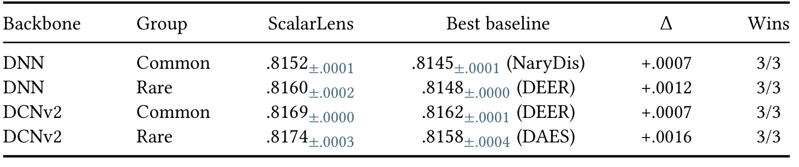
Table 6 固定训练完成的检查点，再把 Criteo 测试样本分成常见和稀有上下文，行按 DNN 与 DCNv2 区分。所谓最强基线，是在 DAES、DEER、NaryDis 中按未截断均值选择，因而这里的优势是相对这三个候选中的最强者，不是相对全十九种表示。DNN 常见组的 ScalarLens AUC 为 0.8152，对最强基线增量约 0.0007；稀有组为 0.8160，增量约 0.0012。DCNv2 的两个组分别为 0.8169、0.8174，对应增量约 0.0007、0.0016。每行 Wins 都是三种子中的三胜，表明这四个冻结分组上的方向一致，而不是重新训练四个子群专用模型后的结果。
稀有程度只由训练类别频次计算，验证集协变量确定第二十与第八十分位阈值，再原样应用于测试协变量。两组测试样本数分别为 916010 与 918284，中间部分并未被硬归入任一端。这使组别不是靠测试标签选择最有利切片，但也意味着这里的稀有是频率意义，不是未来时间、全新域或真正冷启动。稀有组自身 AUC 高于常见组，不表示它对任意模型都更容易，也不表示方法使稀有用户绝对收益更高；不同切片正负例组成不同，不能把组间绝对 AUC 当作因果难度比较。可比较的是同一切片内不同方法的差值。
附录 Table 10 给出了这些冻结组全部方法，ScalarLens 在稀有 DNN 与 DCNv2 上相对 Field 的差分别约为 0.0085 和 0.0111，但 Field 是更弱的参照，因此主文选择更强基线差值更保守。该结果对长尾条件下表示能否保持作用有价值，却不能补足时间切分与延迟反馈的缺口。训练类别频次与验证阈值均是静态设定，一旦生产流量构成变化，分组含义也可能变化。用于实际监控时，应同时跟踪各组样本占比、正例率和性能，而不是把这个一次性离线切片固定为长期安全保证。论文也没有报告这些子群的在线点击或收益变化。
原式 14 给出了不读标签的上下文稀有度：
符号解释：$\mathbf c$ 是一行 Criteo 的二十六个类别值，$n_j(c_j)$ 是字段 $j$ 当前 ID 在训练中的频次，$V_j$ 为该字段词表大小，此处 $N$ 表示训练样本数，与方法部分数值字段数的记号须按语境区分；加一是平滑，$R$ 是平均负对数频率。该公式既不是预测分数也不是损失，只用于固定子群的协变量划分。
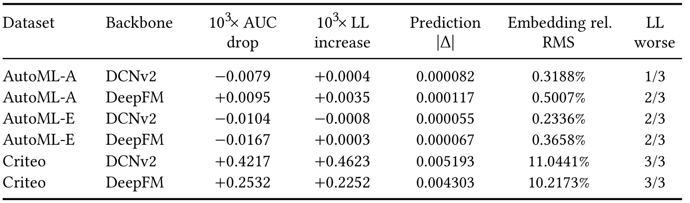
Table 9 提供比重新训练消融更细的依赖检查：固定完整模型检查点，在焦点值分箱内置换数值上下文，保留焦点坐标并破坏其他字段与该样本的对应关系。前三个数值列分别是乘一千后的 AUC 下降、乘一千后的 Logloss 增加以及预测绝对变化，后面是重新注入目标嵌入的相对 RMS 变化和 Logloss 变差的种子数。正的下降值或损失增加意味着置换有害；负值不能继续当作性能损失。冻结模型与训练时遮蔽来源回答不同问题，前者看既有解依赖什么，后者看少了来源后能否重新找到另一个解，因此它们的数字不要求完全一致。
AutoML-A 的两个骨干嵌入相对变化约为 0.3188% 和 0.5007%，AutoML-E 约为 0.2336% 和 0.3658%，虽然表示都变了，预测变化只有很小数量级，AUC 下降符号还混杂。Criteo/DCNv2 的嵌入相对变化达到 11.0441%，预测绝对变化 0.005193，实际 AUC 下降约 0.0004217；Criteo/DeepFM 对应 10.2173%、0.004303 与约 0.0002532，两者三种子的 Logloss 都变差。这里的百分数描述嵌入变化，不能写成 AUC 提升百分比，更不能因为模型最终向量变化较大就宣称坐标发生移动。
这些观察把“接受了上下文”“表示能够响应”和“预测依赖这种响应”三个层次分开。AutoML 的变化证明数值来源没有完全被结构丢弃，却没有证明它对预测稳定有益；Criteo 的损失与概率变化则更支持模型确实用到了其他数值字段。结合前面的来源消融，较稳妥的表述是类别信息普遍更可靠，数值信息的价值依赖数据和消费者。该表仍在验证数据上进行，不是新的独立测试；分箱内置换保留的是粗粒度焦点分布，并不保证所有高阶相关性都自然。因此它是诊断工具而非真实干预实验，更不能解释为实际修改用户行为之后会造成相同点击变化。对于机制论文，保留这些弱结果比只展示 Criteo 的强依赖更能说明模型的适用范围。
3.5 参数平台与真实执行成本
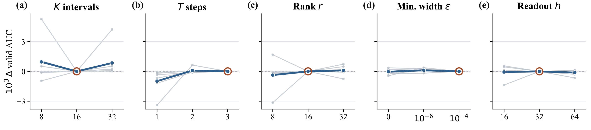
Figure 4 分别改变网格区间数、更新步数、低秩维度、最小区间宽度和回读头宽度，纵轴是相对冻结默认配置的验证 AUC 差乘一千。每个参数只改变一个维度，学习率、批量、优化器、消费者宽度、早停、数据顺序与种子都固定，覆盖三个数据集与两个骨干的六个组合。橙色圈和竖向标记指出原默认位置；淡色线保留各设置差异，深色汇总线显示总体走势。因此图的零点只是当前参数对应的默认值，并不意味着不同面板在绝对 AUC 上完全相同，也不是测试集最佳超参数的搜索曲线。
整体最清晰的趋势是一步更新偏弱，两步或三步能弥补大部分缺口。区间数、秩、最小宽度和头宽度则多呈浅平台，不是维度越大就越好。区间数八的平均曲线看似较高，但贡献集中在一个设置；区间数三十二也未满足作者预先声明的推广默认配置规则。于是最终保留内部默认值：十六区间、三步、秩十六、头宽三十二。这个选择减少了只为一个数据集挑端点的机会，支持“一套冻结设置可用”的论点，但不能外推为所有业务流量、精度和硬件环境都无需调参。
图中还有两个容易混淆的尺度。最小宽度参数是网格的正值底座，不是数值字段的外部标准差；回读宽度是局部头容量，不是 CTR 骨干的隐藏层宽度。把它们混用会导致复现时改变了不止一个机制，也使默认配置对照失去意义。步数从一增至三同时改变表达路径和执行代价，因此性能平台需要与下一张效率图一起考虑。三步比一步好，并不能证明无穷步更好；有界动力学没有提供单调改善或渐近收敛保证。该敏感性分析全部使用验证集，作者强调没有据此重写测试排名，这比测试集上反复挑超参后回报一个胜场更可信，但所有数据都参与了方法开发，真正未见家族的泛化仍需另做实验。
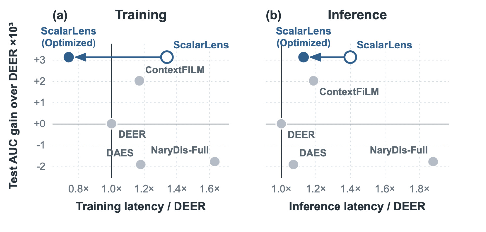
Figure 5 的两个面板分别衡量一次训练步和批量 4096 的推理路径。横轴均为相对 DEER 的时延比，越靠左越快；纵轴是相对 DEER 的测试 AUC 增量乘一千，越高越好。测量对 AutoML-A/E/Criteo 与 DCNv2/DeepFM 六个设置取平均，因此不是单个线上请求的延迟，也不是二十七设置全部消费者的平均。空心点是共同 eager 执行路径下的 ScalarLens，实心点是函数保持的优化实现，水平箭头表示在精度不变时减少执行开销。两点纵坐标不变有特定意义：这里没有通过换小模型或减少迭代步数换取速度。
训练时延从相对 DEER 的 1.34 倍下降到 0.74 倍，推理则从 1.40 倍下降到 1.13 倍。优化后训练步时延较 DEER 低约百分之二十六，但推理仍慢约百分之十三。“0.74 倍时延”不能写成“快百分之七十四”，也不能把训练收益移到推理上。优化包括打包批次、预取、批量查表、整个训练步编译和融合 Adam，原文称预测、损失、梯度与测试 AUC 等价。由此可知原始额外成本里相当一部分是执行组织开销，而不是条件响应所需算术的不可消除下限；剩余推理代价仍然真实存在，论文并未展示超越 DEER 的推理速度。
附录 D 给出环境为单个 PPU-ZW810E 加速器、PyTorch 2.6.0、Python 3.10、FP32 且不开 TF32，每项时间平均三个独立进程。这个硬件与执行栈限定了比值的外推范围；不能直接搬到另一种加速器、小批量在线请求、不同精度或动态形状服务。各基线共享实现制度，而非每一种都已分别调到自己的部署极限，所以表里优化后的优势也不是对所有可能高度优化基线的定理。作者没有记录峰值分配内存，因此本文没有内存效率结论；没有吞吐与尾延迟的完整在线报告，也没有线上 A/B。对实际排序链路，应把额外条件化成本放进端到端延迟预算，并检查是否因为减少并发或增大批量产生排队代价，这些都是待验证问题而非论文已证实收益。
4. 总结
4.1 我的判断
ScalarLens 最值得保留的贡献，是把数值编码接口拆成了一个能严格审计的不变量和一个承担任务适应的变量。局部网格给出焦点值的位置，字段身份和低秩通信形成条件响应，回读保留两者而只替换数值 token。这样做让“上下文影响了什么”不再只是通过最终 AUC 猜测，可以分别检查区间、坐标、状态和最后表示。论文的机制链条也相对完整：数据残差提出问题，匹配消融排除简单容量解释，已知生成器验证响应恢复，冻结置换区分响应与依赖，完整标准化矩阵检验原始尺度优势的来源。几个证据相互呼应，比单一漂亮胜场更有研究价值。
我的评价仍以有限主张为中心。原始尺度二十五个第一是很强的统一协议结果，标准化十六个第一则说明领先范围明显依赖协议。类别来源较可靠、数值来源辅助、冻结消息可简化、ContextFiLM 局部反超，这些结果共同指向一种可调的结构偏置，而非所有组件在每个场景都不可替代。所谓有界也只覆盖内部状态幅度，不能升级为收敛证明，更不能将坐标不变性误写成最终预测不变性。对论文的合理概括是：在所测消费者中，明确区分位置与响应有益；超出这一范围的鲁棒性、效率和收益都需要新证据。
4.2 工程启发与复现顺序
首先应在现有数值处理链上同时保留原始尺度与共享标准化两套配对基线，固定数据划分、骨干、种子和模型选择规则，再观察当前业务属于哪一类增量分布。这样才能判断收益主要来自输入兼容还是条件表达。随后应核对固定模型中的坐标不变量：仅交换上下文时，焦点区间、插值系数和局部向量保持不变；最终输出允许改变，内部状态范围则另外检查。这些约束来自计算图，可直接定位误把上下文接入网格或错误混用归一化的实现问题。
其次，应优先复现 Local only、类别条件化、完整数值加类别、ContextFiLM 及 FrozenMessage 这些有取舍意义的对照，而不是只复现完整模型平均 AUC。来源消融能回答哪些特征值得承担服务依赖，匹配条件化能判断是否需要三步低秩响应，冻结消息则可能给出不明显损失精度的简化候选。最后才在目标部署栈测小批量、峰值内存、端到端与尾延迟；当前百分之十三的批量推理溢价是一个起点，不能替代真实服务预算。在获得这些证据前，论文最多支持离线研究优先级，尚不足以直接判定生产替换收益。
4.3 局限与后续跟进
第一，AutoML-A 与 AutoML-E 共享家族，且全部数据都参与开发，二十七个组合互相关联；后续需要真正未参与设计的数据家族，以检验统一接口是不是只适合当前字段统计。第二，随机切分、合成协变量偏移与频次稀有组都不能代表时间概念漂移，应增加时间切分、延迟标签与特征版本变化，观察裁剪和范围更新如何影响坐标。第三，基线是共同接口的实现，其中若干按论文重实现，DAES 未包含流式估计器；若目标是与流式部署系统比较，就要补全对应流水线，不能把当前模块比较当作整套系统比较。第四，未报告峰值内存和在线 A/B，不能把离线 AUC 提升直接转为点击、收入或资源收益。
还有两个细节值得持续跟进。一是超出训练范围的值会被裁到端点，若业务新分布大量越界，稳定坐标可能牺牲强度区分，需监测越界率及端点样本性能。二是优化实现声称函数与梯度等价，但本轮尚未核验公开 artifact 的可访问性，复现需要确认源代码、配置摘要、每种子记录和原始时延轨迹。具体跟进应包括：取得可执行实现并复核等价性；在时间切分上重做两套尺度协议与来源消融；在目标硬件和线上批量上测量延迟及内存。三项分别解决实现可信度、分布外推和部署成本的缺口，完成后才能判断这套响应模块在自己的排序系统中是否值得保留。